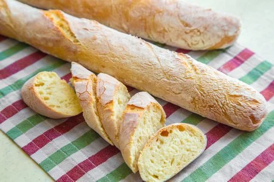

____
Традиционная еда
Французский багет — длинное и тонкое хлебобулочное изделие, мягкое внутри, с хрустящей корочкой, часто припудренное мукой. У стандартного багета длина примерно 65 см, ширина 5-6 см и высота 3-4 см. Вес приблизительно 250 г. Своеобразный символ Франции.

Круассан — небольшое мучное кондитерское изделие, булочка в форме полумесяца (рогалика) из слоёного теста с содержанием сливочного масла не менее 82 % жирности. Очень популярен во Франции, где подаётся на завтрак к кофе для взрослых или к какао («горячему шоколаду» по-французски) для детей; своеобразный символ этой страны.

Трюфель — род сумчатых грибов с подземными клубневидными мясистыми плодовыми телами из порядка пецицевых (Pezizales). К данному роду относятся съедобные виды, считающиеся ценными деликатесами.
Французский луковый суп — лук в бульоне с сыром и гренками (крутонами). Луковые супы очень популярны с древних времён. Эти супы были известны и широко распространены в римскую эпоху правления. В силу доступности и лёгкости выращивания лук — основной продукт для приготовления супа — был основной пищей для многих бедных семей.

____